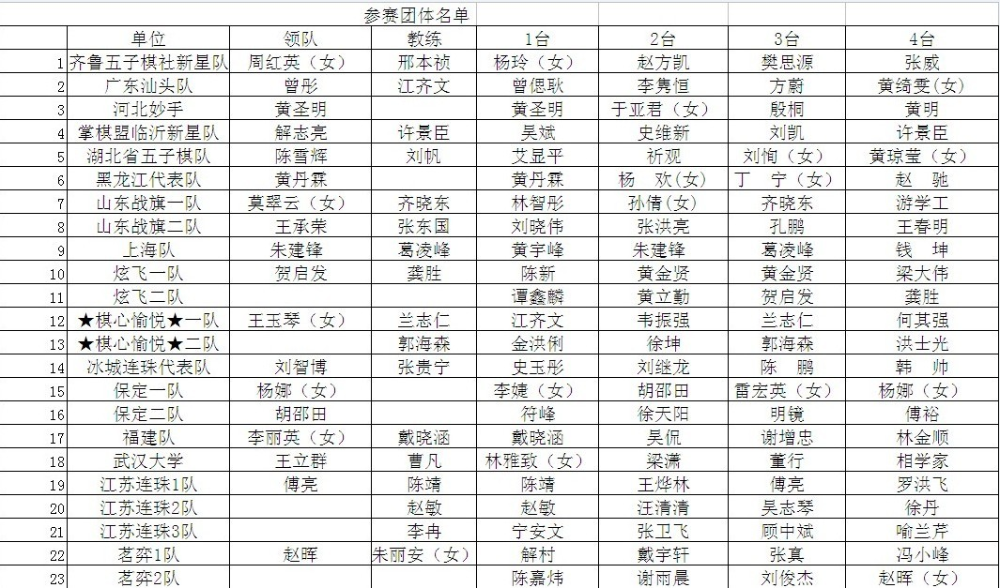

2010年全国五子棋团体赛参赛队伍名单
#1 2010年全国五子棋团体赛参赛队伍名单 作者：无尽 发表时间：2010-4-24 21:37:54

以官方公布为准
［此帖子已被 无尽 在 2010-4-24 21:41:59 编辑过］
#2 Re:2010年全国五子棋团体赛参赛队伍名单 作者：我就不信注册不上 发表时间：2010-4-24 21:56:05
错误好像还不少呢，比如没注明性别的女同胞绝对不少于5个
另：北京和浙江竟然。。。。。
#3 Re:2010年全国五子棋团体赛参赛队伍名单 作者：无尽 发表时间：2010-4-24 21:59:28
没注明不是错误哦 北京浙江 看看最后有没有吧 这个是先睹为快。。#4 Re:2010年全国五子棋团体赛参赛队伍名单 作者：浩瀚铭剑 发表时间：2010-4-24 22:09:16
 无尽大师我告诉你的消息 该奖励我哈
无尽大师我告诉你的消息 该奖励我哈［ 无尽 于 2010-4-24 22:15:52 时花20金币送鲜花一朵］
#5 Re:2010年全国五子棋团体赛参赛队伍名单 作者：牛牛 发表时间：2010-4-24 22:21:03
无尽老师 凯凯老师 我没告诉您这个消息 但您也奖励我点吧
［ 无尽 于 2010-4-24 22:23:22 时花20金币送鲜花一朵］
#6 Re:2010年全国五子棋团体赛参赛队伍名单 作者：浩瀚铭剑 发表时间：2010-4-24 22:25:17
 牛牛就是牛牛 说什么话还是这么牛
牛牛就是牛牛 说什么话还是这么牛
#7 Re:2010年全国五子棋团体赛参赛队伍名单 作者：牛牛 发表时间：2010-4-24 22:28:02
 老师真好 谢谢老师的奖励 谢谢老师及时发布的消息
老师真好 谢谢老师的奖励 谢谢老师及时发布的消息
#8 Re:2010年全国五子棋团体赛参赛队伍名单 作者：浪人痴痴 发表时间：2010-4-25 2:56:16
首页留名。
#9 Re:2010年全国五子棋团体赛参赛队伍名单 作者：dyccj 发表时间：2010-4-25 9:03:50
女棋手后面没标注女说明她们实力强于一般的男棋手，而且经常参加男子比赛，这个可以理解。现在五子棋比赛是王小二过节，如果没有网络队和高校队参加，不知道全国团体赛还能不能办下去，世团赛看样子是撑不了两届了。#10 Re:2010年全国五子棋团体赛参赛队伍名单 作者：无尽 发表时间：2010-4-25 10:19:53
有参与者比赛就能继续啊~~ 网络队和高校队组队的形式只是人员和资源分配问题 并不是说缺少参与者
世团赛除了刚开始队伍较少，一直以来都是8支队伍左右的，下届如果在欧洲参赛队伍又会相应增减
组织和参与比赛最主要的问题是资金问题吧
而现在的问题是怎么让更多的人（国家）参与进来，几个人与几十个人比赛照样可以进行
［此帖子已被 无尽 在 2010-4-25 10:22:44 编辑过］
#11 Re:2010年全国五子棋团体赛参赛队伍名单 作者：方圆之外 发表时间：2010-4-25 11:04:12
才23个队？
#12 Re:2010年全国五子棋团体赛参赛队伍名单 作者：路痴 发表时间：2010-4-25 11:44:24
今年有竞猜不？ 不是号称猜谁牺牲谁么？#13 Re:2010年全国五子棋团体赛参赛队伍名单 作者：无尽 发表时间：2010-4-25 11:48:10
猜啊，不过不知道这个是不是最终名单 听说北京是不去了 也听说最终大概24个队伍 我去弄。。
［此帖子已被 无尽 在 2010-4-25 11:48:45 编辑过］
#14 Re:2010年全国五子棋团体赛参赛队伍名单 作者：屏蔽 发表时间：2010-4-25 12:10:07
北京真没有#15 Re:2010年全国五子棋团体赛参赛队伍名单 作者：浩瀚铭剑 发表时间：2010-4-25 13:04:35
2简称：很2
 不知道各位大师知道了不
不知道各位大师知道了不
#16 Re:2010年全国五子棋团体赛参赛队伍名单 作者：菜包先生 发表时间：2010-4-25 14:42:49
没有大鱼的比赛没意思
严重支持保定一队
［此帖子已被 菜包先生 在 2010-4-25 14:43:57 编辑过］
#17 Re:Re:2010年全国五子棋团体赛参赛队伍名单 作者：我就不信注册不上 发表时间：2010-4-25 15:23:46
引用：这句话一点都不敢恭维，党代会代表、人代会代表、政协委员中的女性，有很多行政级别比一般男性代表高的，照样还是要注明性别，如本届中央政治局委员、政协第一副主席刘延东（女）。要么图省事干脆都不标注，要么就一起标注，绝不可能只标注一部分（当然，这个好像还不是最终名单）
原文由 dyccj 发表于 2010-4-25 9:03:50 :
女棋手后面没标注女说明她们实力强于一般的男棋手，而且经常参加男子比赛，这个可以理解。现在五子棋比赛是王小二过节，如果没有网络队和高校队参加，不知道全国团体赛还能不能办下去，世团赛看样子是撑不了两届了。
#18 Re:2010年全国五子棋团体赛参赛队伍名单 作者：风铃 发表时间：2010-4-25 22:42:41
网络社团越来越活跃。。应该是个好的发展``#19 Re:2010年全国五子棋团体赛参赛队伍名单 作者：忧郁的双眼 发表时间：2010-4-27 19:03:46
要我竞猜我就猜我们君君拿好名次
#20 Re:2010年全国五子棋团体赛参赛队伍名单 作者：忧郁的双眼 发表时间：2010-4-27 19:07:52
我决定投票给河北妙手#21 Re:2010年全国五子棋团体赛参赛队伍名单 作者：路痴 发表时间：2010-4-27 21:34:40
小毒....不带你这么黑人的......#22 Re:2010年全国五子棋团体赛参赛队伍名单 作者：虎哥 发表时间：2010-4-27 23:39:13
我也看好河北妙手队，楼上的姐姐我爱你！